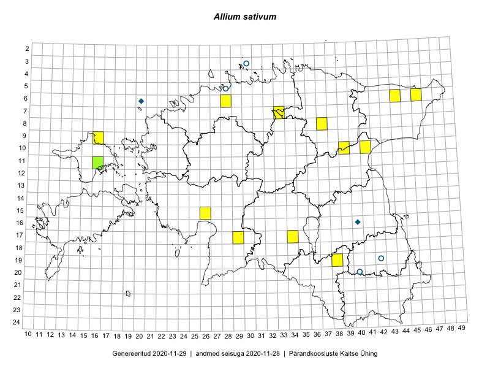

Allium sativum
Uuendatud: 2016-12-07
Kaardile koondatud taksonid: Allium sativum L.

Kaart põhineb 13 vaatlusel. Taime on leitud 11 ruudust.
| Ruut | Vaatleja(d) | Vaatlusaeg | Kirje tüüp | Viide andmebaasikirjele |
|---|---|---|---|---|
| 06-44 | Peedu Saar, Liina Oja | 2015-07-21 | punkt | vaata PlutoFis |
| 06-44 | Peedu Saar, Liina Oja | 2015-07-21 | punkt | vaata PlutoFis |
| 10-41 | Toomas Kukk, Raivo Kalle | 2015-05-14 | punkt | vaata PlutoFis |
| 06-46 | Toomas Kukk, Eerik Leibak | 2015-04-25 | punkt | vaata PlutoFis |
| 09-16 | Toomas Kukk, Eerik Leibak | 2015-08-11 | ruut/ala | vaata PlutoFis |
| 09-16 | Toomas Kukk, Eerik Leibak | 2015-08-11 | punkt | vaata PlutoFis |
| 07-33 | Jana-Maria Habicht, Ester Valdvee | 2015-05-01 | punkt | vaata PlutoFis |
| 19-38 | Karin Kikas, Elle Rajandu | 2015-05-15 | punkt | vaata PlutoFis |
| 17-34 | Maria Abakumova, Helle Mäemets | 2015-05-27 | punkt | vaata PlutoFis |
| 08-37 | Karin Kikas, Elle Rajandu | 2015-06-14 | punkt | vaata PlutoFis |
| 17-29 | Tiit Hallikma, Ott Luuk | 2016-04-28 | punkt | vaata PlutoFis |
| 10-39 | Ott Luuk, Eerik Leibak | 2016-08-03 | punkt | vaata PlutoFis |
| 11-16 | Thea Kull, Toomas Kukk | 2016-08-08 | punkt | vaata PlutoFis |